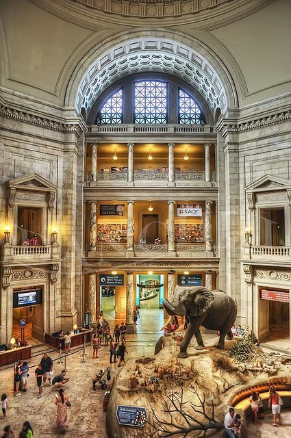

The National Museum, New Delhi, as we see it today, has an interesting beginning. The blueprint for establishing the National Museum in Delhi was prepared by the Maurice Gwyer Committee in May 1946. An Exhibition of Indian Art, consisting of selected artefacts from various museums of India was organized by the Royal Academy, London with the cooperation of Government of India and Britain. The Exhibition went on display in the galleries of Burlington House, London during the winter months of 1947-48. It was decided to display the same collection in Delhi, before the return of exhibits to their respective museums. An exhibition was organized in the the RashtrapatiBhawan (President's residence), New Delhi in 1949, which turned out to be a great success. This event proved responsible for the creation of the National Museum.
The success of this Exhibition led to the idea that advantage should be taken of this magnificent collection to build up the nucleus collection of the National Museum. State Governments, Museum authorities and private donors, who had participated in the exhibition, were approached for the gift or loan of artefacts, and most of them responded generously. (Click here to see the gifts from various donors to the National Museum).
On August 15, 1949, the National Museum, New Delhi, was inaugurated in the Rashtrapati Bhawan by Shri R.C. Rajagopalachari, the Governor-General of India. The foundation of the present building was laid by Pandit Jawaharlal Nehru, the Prime Minister of India, on May 12, 1955. The first phase of the National Museumbuilding was formally inaugurated by Dr. SarvepalliRadhakrishnan, the Vice President of India, on December 18, 1960. The second phase of the building was completed in 1989.
While the Museum continued to grow its collection through gifts that were sought painstakingly, artefacts were collected through its Arts Purchase Committee. The Museum presently holds approximately 2,00,000 objects of diverse nature, both Indian as well as foreign, and its holdings cover a time span of more than five thousand years of Indian cultural heritage.
The National Museum was initially looked after by the Director General of Archaeology until 1957, when the Ministry of Education, Government of India, declared it a separate institution and placed it under its own direct control. At present, the National Museum is under the administrative control of the Ministry of Culture, Government of India.